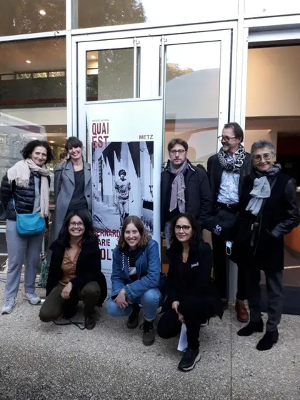
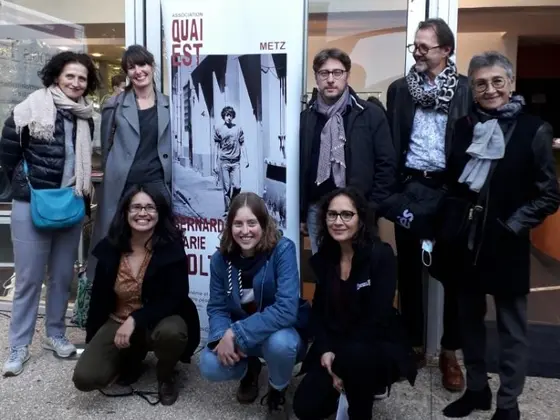
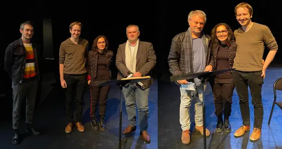
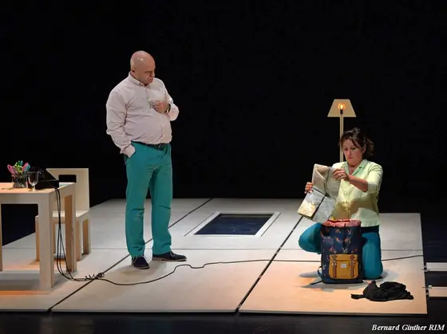
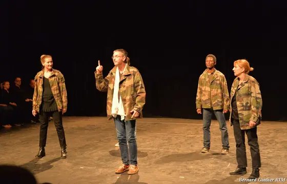
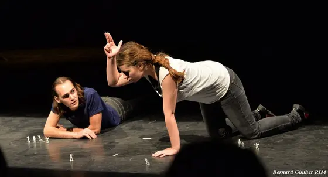

Spectacles, lectures, artistes, publics, jury : les images des éditions passées. Chaque photo se retrouve aussi sur la page de son édition. Cliquez pour agrandir ; les flèches du clavier font défiler les photos.
Toutes les éditions 2025 2023 2021 2018 2016 2009 2012
Tous les types Spectacles & lectures Rencontres & public Jury & équipe Affiches & visuels
2025 — Affiche de la 7e Biennale, « Voyages »Affiche · archives Quai Est 2023 — Soirée inaugurale à l’Opéra-Théâtre de MetzArchives Quai Est 2023 — Soirée inaugurale, vue de la scèneArchives Quai Est 2023 — Rencontre-événement de la soirée inauguraleArchives Quai Est 2023 — Après la soirée inaugurale, autour d’une tableArchives Quai Est 2023 — « Tabataba », mise en scène de Stanislas Nordey (TNS)© Jean-Louis Fernandez 2023 — « Tabataba », mise en scène de Stanislas Nordey (TNS)© Jean-Louis Fernandez 2023 — « Tabataba », mise en scène de Stanislas Nordey (TNS)© Jean-Louis Fernandez 2023 — Photographie de scène (Massimo Riggi, Roberto Zucco)Archives Quai Est 2023 — Sortie de chantier, 25 novembre 2023Archives Quai Est 2023 — Sortie de chantier, 25 novembre 2023Archives Quai Est 2023 — Sortie de chantier, 25 novembre 2023Archives Quai Est 2023 — Marathon de lectures au FRAC LorraineArchives Quai Est 2023 — Marathon de lectures au FRAC LorraineArchives Quai Est 2023 — Lecture au Centre Pompidou-MetzArchives Quai Est 2023 — Lecture au Centre Pompidou-MetzArchives Quai Est 2023 — Lecture mise en espace, marathon du Prix #2Archives Quai Est 2023 — Échanges autour du marathon de lecturesArchives Quai Est 2023 — Soirée de clôture à Montigny-lès-MetzArchives Quai Est 2023 — Affiche de la 6e Biennale, « Qui ? Koltès ! »Affiche · archives Quai Est 2023 — Affiche du Prix Koltès #2Affiche · archives Quai Est 
2021 — Le jury et l’équipe du Prix Koltès, 2021Archives Quai Est 
2021 — Le jury du Prix Koltès, 2021Archives Quai Est 
2021 — Prix Koltès 2021, remise des prixArchives Quai Est 2021 — Visuel du Prix Koltès 2021Affiche · archives Quai Est 2018 — La Biennale 2018 s’affiche place d’Armes à MetzArchives Quai Est 2018 — Accueil de la Biennale à l’AgoraArchives Quai Est 2018 — La Biennale à l’Agora, de nuitArchives Quai Est 2018 — La Biennale à l’AgoraArchives Quai Est 2018 — Lecture-spectacle « Allers-retours »Archives Quai Est 2018 — Lecture-spectacle « Allers-retours »Archives Quai Est 2018 — Lecture-spectacle « Allers-retours »Archives Quai Est 2018 — Mise en voix d’extraits de « Dans la solitude des champs de coton »Archives Quai Est 2018 — Mise en voix d’extraits de « Dans la solitude des champs de coton »Archives Quai Est 2018 — Mise en voix d’extraits de « Dans la solitude des champs de coton »Archives Quai Est 2018 — « Passeport », lecture à deux voix et deux languesArchives Quai Est 2018 — « Passeport », lecture à deux voix et deux languesArchives Quai Est 2018 — « Passeport », lecture à deux voix et deux languesArchives Quai Est 2018 — « Nos histoires », feuilleton à deux voixArchives Quai Est 2018 — « Nos histoires », feuilleton à deux voixArchives Quai Est 2018 — Lecture « Traverser l’autoroute »Archives Quai Est 2018 — Lecture « Traverser l’autoroute »Archives Quai Est 2018 — Lecture musicale avec contrebasseArchives Quai Est 2018 — Spectacle de clôture, novembre 2018Archives Quai Est 2018 — Spectacle de clôture, novembre 2018Archives Quai Est 2018 — Spectacle de clôture, novembre 2018Archives Quai Est 2018 — Installation performative « Murs » au musée de la Cour d’OrArchives Quai Est 2018 — Affiche de la 4e Biennale, « Écritures de l’exil »Affiche · archives Quai Est 
2016 — Scène de spectacle, Biennale 2016Archives Quai Est 
2016 — Scène de spectacle, Biennale 2016Archives Quai Est 
2016 — Scène de spectacle, Biennale 2016Archives Quai Est 2016 — Affiche de la 3e Biennale, « Hantises »Affiche · archives Quai Est 2012 — Affiche de la Biennale 2012Affiche · archives Quai Est 2009 — Affiche officielle de l’intégrale Koltès, 16-24 octobre 2009Archives Quai Est 2009 — Affiche d’exposition « 2009, l’année Koltès »Archives Quai Est 2009 — Panneaux de l’exposition, intégrale 2009Archives Quai Est 2009 — Vitrine de l’exposition, intégrale 2009Archives Quai Est 2009 — Séance de lecture autour d’une table, 2009Archives Quai Est 2009 — Le bus Koltès, Metz 2009Archives Quai Est 2009 — Inauguration devant le bus Koltès, 2009Archives Quai Est 2009 — L’Hôtel de Ville de Metz aux couleurs de l’intégraleArchives Quai Est 2009 — Table ronde, intégrale Koltès 2009Archives Quai Est À compléter
Crédits : archives de l’association Quai Est, sauf mention contraire. Pour signaler une erreur de légende ou de crédit, ou demander le retrait d’une image, écrivez-nous .